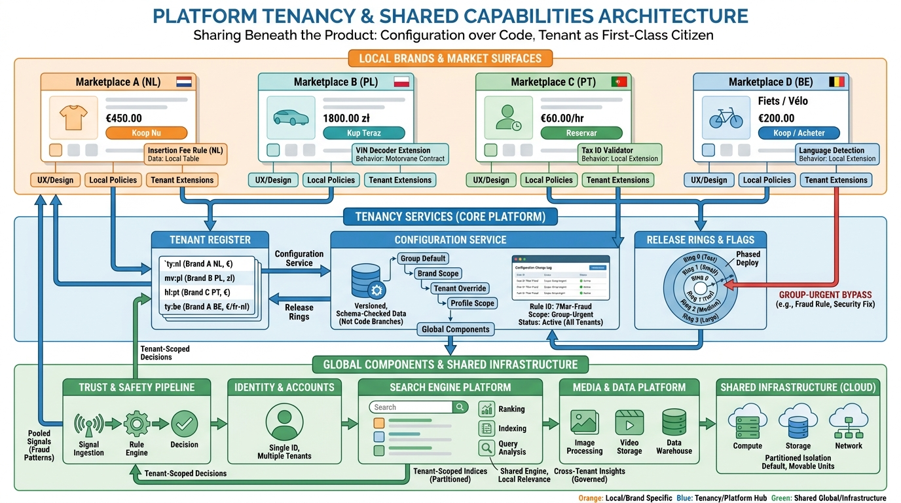

Part VII — PLATFORM: The Distributed System Underneath
One Platform, Many Marketplaces: Multi-Country and Multi-Brand Architecture

Image generated by Google Gemini (gemini-3-pro-image-preview)
Part VII — PLATFORM: The Distributed System Underneath

Image generated by Google Gemini (gemini-3-pro-image-preview)